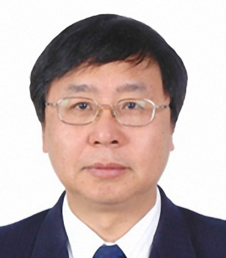
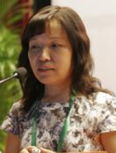

Committee of Advisors
Qian Yi
Academician of Chinese Academy of Engineering
School of Environment, Tsinghua University
Hao Jiming
Academician of Chinese Academy of Engineering
School of Environment, Tsinghua University

Qu Jiuhui
Academician of Chinese Academy of Engineering
School of Environment, Tsinghua University
Research Center for Eco-Environmental Sciences, Chinese Academy of Sciences
Ren Nanqi
Academician of Chinese Academy of Engineering
School of Environment, Harbin Institute of Technology

Yang Zhifeng
Academician of Chinese Academy of Engineering
School of Environment, Beijing Normal University

He Kebin
Academician of Chinese Academy of Engineering
School of Environment, Tsinghua University
Academic Committee

Wu Ye
Professor, Vice Dean
School of Environment, Tsinghua University

Huang Xia
Professor
School of Environment, Tsinghua University
Hu Hongying
Professor, Vice Dean
Graduate School, Tsinghua University
Ren Yongxiang
Professor, Dean
Xi’an University of Architecture and Technology

Zhu Tong
Professor, Dean
College of Environmental Science and Engineering, Peking University

Yu Hanqing
Professor
School of Chemistry and Materials Science, University of Science and Technology of China
Dai Xiaohu
Professor, Dean
College of Environmental Science and Engineering, Tongji University

Ren Hongqiang
Professor, Dean
School of the Environment, Nanjing University
Chen Baoliang
Professor, Dean
College of Environmental and Resource Sciences, Zhejiang University
Geng Yong
Professor, Dean
Shanghai Jiao Tong University

Yang Xin
Professor, Chair
Department of Environmental Science and Engineering, Fudan University

Sun Hongwen
Professor, Dean
College of Environmental Science and Engineering, Nankai University
Chen Guanyi
Professor, Dean
School of Environment Science and Engineering, Tianjin University
Wang Shuguang
Professor, Vice Dean
School of Environmental Science and Engineering, Shandong University

Wang Kejian
Professor, Dean
College of Oceanic and earth, Xiamen University
Chen Jingwen
Professor, Dean
Faculty of Chemical, Environment and Biological Science and Technology, Dalian University of Technology
Hua Xiuyi
Professor, Vice Dean
College of Environment and Resources, Jilin University
Qiang Zhimin
Research Fellow, Professor
Research Center for Eco-Environmental Sciences, Chinese Academy of Sciences
Organizing Committee
Lu Xi
Chairman of Organizing Committee
Associate Professor
School of Environment, Tsinghua University
Dong Xin
Vice Chairman of Organizing Committee
School of Environment, Tsinghua University
Fang Kuo
Vice Chairman of Organizing Committee
School of Environment, Tsinghua University
Zhang Shuo
Vice Chairman of Organizing Committee
School of Environment, Tsinghua University

Zhang Ying
Vice Chairman of Organizing Committee
School of Environment, Tsinghua University